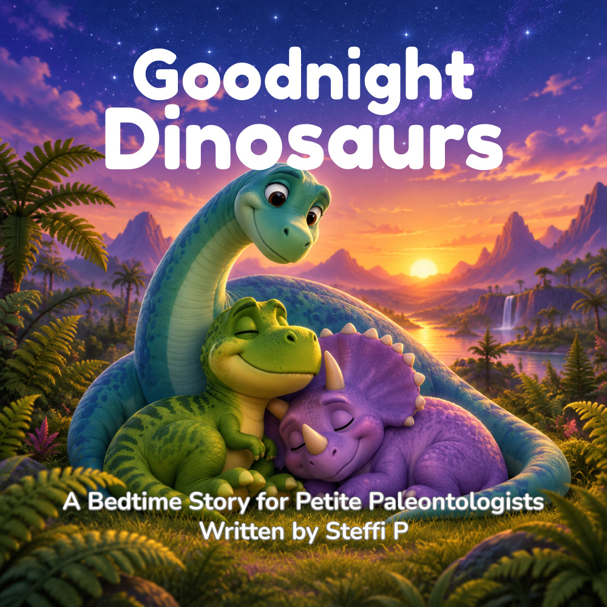
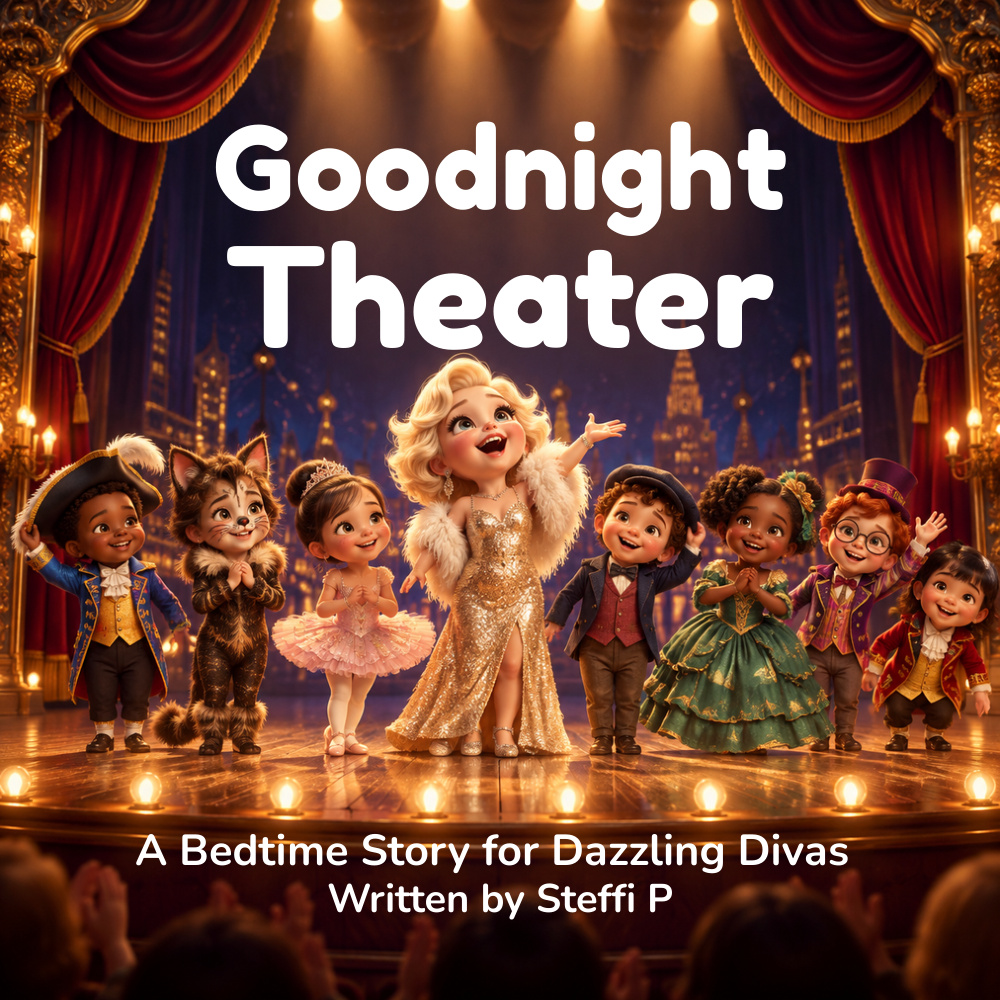
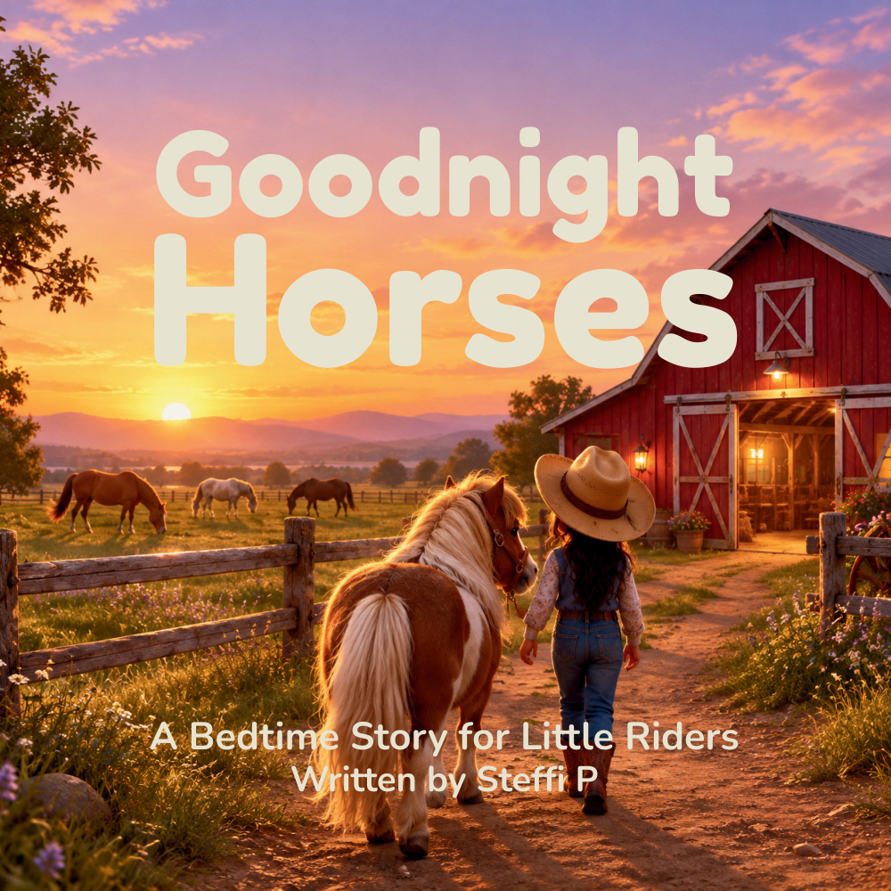
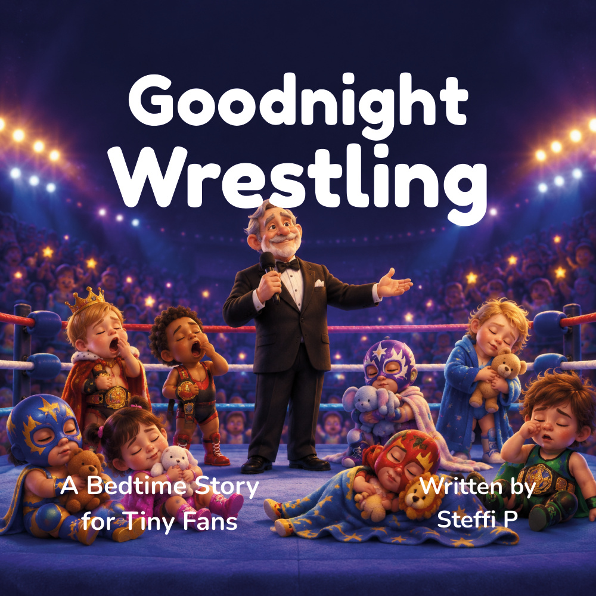
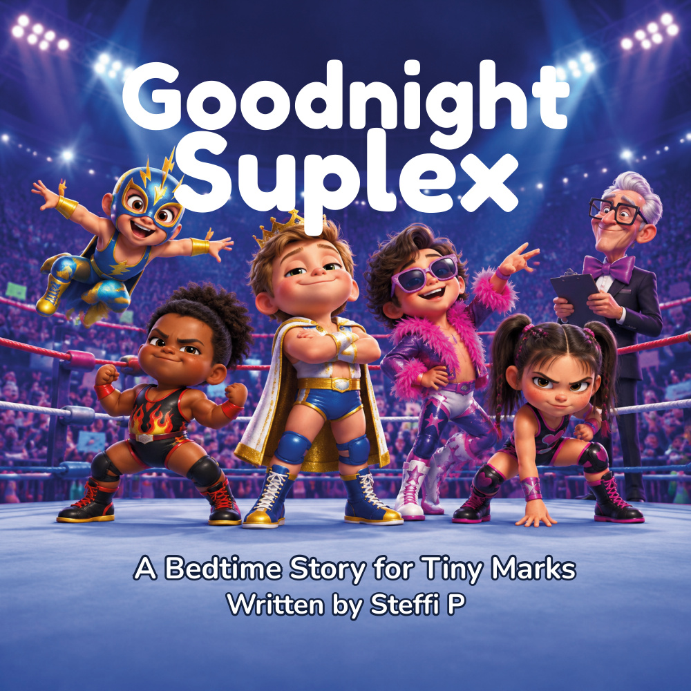
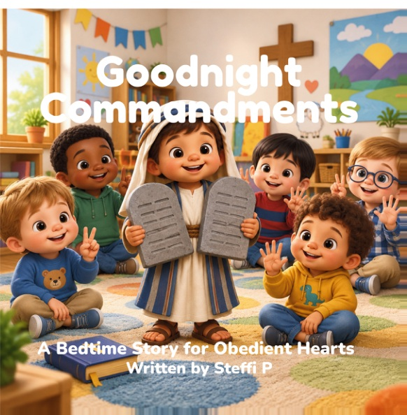

Completed and in-development manuscripts with page sequencing, visual pacing, rhyme, and age-appropriate storytelling.
Published original book
Goodnight Feelings
An independently published bedtime story about making room for big emotions.

Illustrated manuscript · Not published
Goodnight Dinosaurs
An original illustrated bedtime story built around dinosaur toys and a child’s imagined nighttime world.
View illustrated sample ↗

Illustrated manuscript · Not published
Goodnight Theater
An original illustrated bedtime story exploring a theatrical performance and ending with an encore.
View illustrated sample ↗

Illustrated manuscript · Not published
Goodnight Horses
A rhyming bedtime story introducing young readers to horse care, riding vocabulary, and life around the barn.
View illustrated sample ↗

Illustrated fan tribute · Not published
Goodnight Wrestling
A bedtime tribute to professional wrestling, from performers and referees to production crews and the fan experience.
View illustrated sample ↗

Illustrated manuscript · Not published
Goodnight Suplex
A wrestling-themed bedtime story featuring original fictional characters, pairing arena spectacle with childhood humor and bedtime calm.
View illustrated sample ↗

Original illustrated bedtime story · Paperback proof ordered
Goodnight Commandments
A rhyming, illustrated introduction to the Ten Commandments with interactive hand motions. A physical paperback proof has been ordered; publication is pending review.